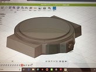

自分は何かを作るとき、たてよこ高さの最大値を取り、そこから削って作るという考えがまず思いつくが、
実際にソフトを使ってみると、モノはパーツでできていることに気づき、自分のやり方だと、とても無理があった。
そこでいくつかのパーツを組み合わせて、腕時計を図に起こしてみた。
細かいところまでは再現できなかったが、大まかな部分は再現できたのではと思っている。

まだソフトの操作に慣れていないので、操作に慣れ、より複雑なモノを象ってみたい。